A topological space  is connected if it is not the union of two
disjoint non-empty open sets. A subset is connected if it is so in the
subspace topology. A subset that is both open and closed is clopen.
is connected if it is not the union of two
disjoint non-empty open sets. A subset is connected if it is so in the
subspace topology. A subset that is both open and closed is clopen.
is connected if and only if its only clopen subsets are
 and ; equivalently, if and only if every continuous
map
and ; equivalently, if and only if every continuous
map
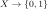
, the latter discrete, is constant.
A clopen  with
with
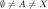
gives the disconnection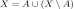
into non-empty open sets, and conversely each piece of a disconnection is clopen, being the complement of the other. A continuous has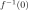
clopen, and a non-constant makes it a proper
non-empty clopen set; conversely a proper clopen yields the
continuous non-constant indicator of .
makes it a proper
non-empty clopen set; conversely a proper clopen yields the
continuous non-constant indicator of .
The continuous image of a connected space is connected. Connectedness is therefore a topological invariant.
Let  be continuous and surjective with
connected, and let be continuous. Then
be continuous and surjective with
connected, and let be continuous. Then
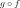
is continuous, hence constant, and is surjective, so
 is constant. By the previous proposition
is constant. By the previous proposition  is connected. A
homeomorphism is in particular a continuous surjection in both
directions.
is connected. A
homeomorphism is in particular a continuous surjection in both
directions.
If are connected subsets of with a common point  ,
then
,
then
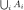
is connected. If is connected and
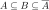
, then is connected.
is connected.
Let be a continuous map from the union to  . Its
restriction to each
. Its
restriction to each
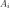
is continuous, hence constant, with value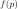
; so is constant.
For the second claim, let
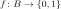
be continuous; it is constant on, say with value  , so
, so
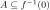
, which is closed in. Hence
contains the closure of in , which is
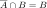
.
A subset of  is connected if and only if it is an interval, that
is, if
is connected if and only if it is an interval, that
is, if  with
with
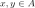
implies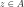
.
If is not an interval, pick such an with
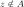
; then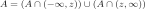
is a disconnection into non-empty relatively open sets.
Conversely let be an interval and suppose
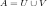
with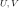
non-empty, disjoint and open in.
Pick  ,
, 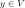
, say ; then
; then
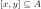
. Let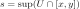
, which exists by completeness. If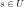
then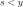
, and since is open in
a whole interval
is open in
a whole interval 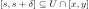
would exceed the supremum. If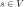
then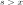
, and openness of puts
puts 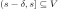
, so no point of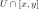
exceeds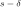
, again contradicting the supremum. But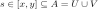
– a contradiction.
A path in from
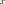
to is a continuous
is a continuous
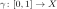
with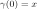
and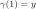
. The space is path-connected if any two of its points are joined by a path.Every path-connected space is connected.
If is empty the claim is vacuous. Otherwise fix
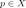
. For each choose a path from to ; its image is the
continuous image of ![\([0,1]\)](m/b40f419d16d54b95652910807100bb67f190c2b6.svg) , which is connected as an interval, and
contains . So is a union of connected sets with the common
point , hence connected.
, which is connected as an interval, and
contains . So is a union of connected sets with the common
point , hence connected.
The relation " and lie in a common connected subset" is an
equivalence relation; its classes, the connected components, are the
maximal connected subsets of , and they are closed and partition
.
Reflexivity uses the connected set
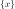
; symmetry is clear; and if and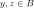
with connected, then
connected, then
 is connected by the previous proposition, having the point
in common. The class of is the union of all connected sets
containing , connected for the same reason, hence the largest such
set. Classes partition , and each is closed because its closure is
connected and contains it, so equals it by maximality.
is connected by the previous proposition, having the point
in common. The class of is the union of all connected sets
containing , connected for the same reason, hence the largest such
set. Classes partition , and each is closed because its closure is
connected and contains it, so equals it by maximality.
Components are closed but need not be open: in  every component is
a single point, and no point is open. That example is also the reason
connectedness is not the same as path-connectedness – the standard
counterexample being the closure of the graph of
every component is
a single point, and no point is open. That example is also the reason
connectedness is not the same as path-connectedness – the standard
counterexample being the closure of the graph of
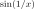
, which is connected by the second half of the union proposition and admits no path to the segment it accumulates on.